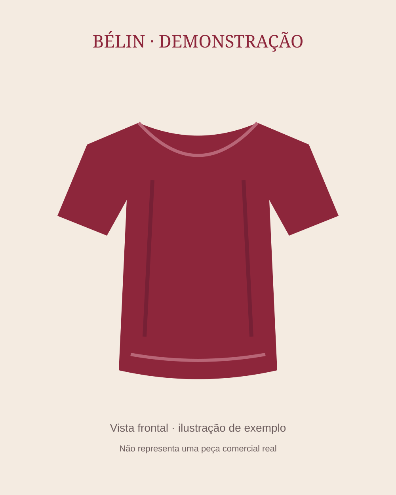

Fotografia 1 de 2
Deslize para ver mais
Sem categoria
Demo — Blusa Bordô
Referência: demo-blusa-bordo
R$ 159,90
Disponível · Bordô · P
Código da variante: cmw44nmei0008p4mo8z5e8gib
O provador receberá a peça e a variante escolhidas. A navegação não envia fotografias nem inicia processamento.
Sobre a peça
Peça de demonstração para conhecer a experiência BÉLIN. Não representa um produto comercial real. Use este exemplo para alternar entre vistas e selecionar cores e tamanhos. As imagens são ilustrações identificadas como exemplo, e o preço é demonstrativo. A combinação Bordô / M está indisponível para testar o seletor.
Continue explorando